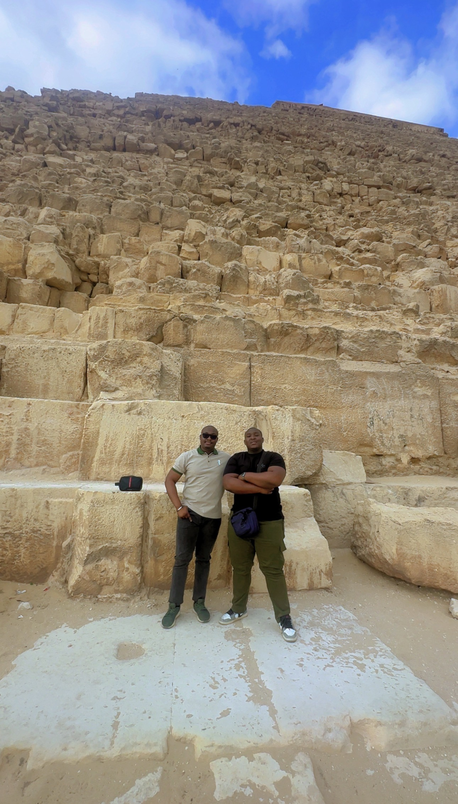
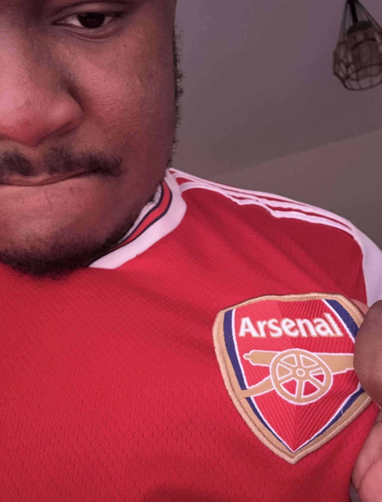

Beyond
the
screen.
There's more to my life than systems, software, and everything happening behind a computer screen.
I'm AJ. Outside work, you'll find me following football and basketball, listening to music, spending time with people who matter to me, or making memories somewhere along the way.
This is a collection of those interests, experiences, and moments that make up the other side of my story.

Some of the best parts of life aren't things you put on a CV.
Places I've been.
Moments I've
kept.
From Nigeria to Egypt and journeys beyond, I've come to appreciate the experiences that take me outside familiar surroundings.
Some journeys are about exploring somewhere new. Others carry deeper meaning. Each one becomes part of the story.
Life is better
with
good company.
Family, friendships, shared experiences, and memories from different chapters of my life.
People give moments their meaning. And some photographs are worth keeping simply because of who was there.
North London
Forever.
Arsenal Football Club. Through the celebrations, frustrations, big matches, and everything in between.
Supporting Arsenal means embracing the entire experience. The anticipation before a match, the debates afterwards, the players, the history, and the moments that stay with you.
Some weekends are better than others. That's football. The loyalty doesn't change.
Arsenal Official Website
THE GUNNERS.The highs. The memories. The Gunners.
Dallas
Basketball.
The Dallas Mavericks are my team when it comes to the NBA.
Basketball has its own kind of drama. Momentum swings, unforgettable performances, playoff runs, and the unpredictability that makes following a team so entertaining.
From the Luka Dončić years to everything that's come with supporting the Mavericks, there's always been something worth talking about.
Dallas Mavericks Official WebsiteThe players. The playoffs. The memories.
Always
on
repeat.
There's usually a soundtrack to whatever I'm doing.
Whether I'm working, travelling, relaxing, or just enjoying a quiet moment, music is almost always part of the experience.
J. Cole and Yeat are among the artists I enjoy, and my listening history tells its own story.
My music.
My rotation.
Take a look at what I've been listening to on Apple Music.
The sounds behind the moments.
A life in
photographs.
Some photographs capture achievements. Others are just ordinary moments that become special with time.
From university experiences and graduation to personal milestones, outfits, and everyday memories, here's a little more of my story.
Still
exploring.
More places to visit. More moments to remember. More music to discover. More games to watch. And plenty of life still to experience.